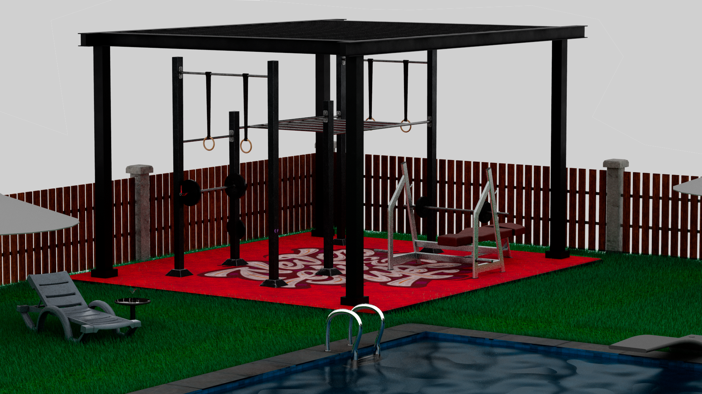
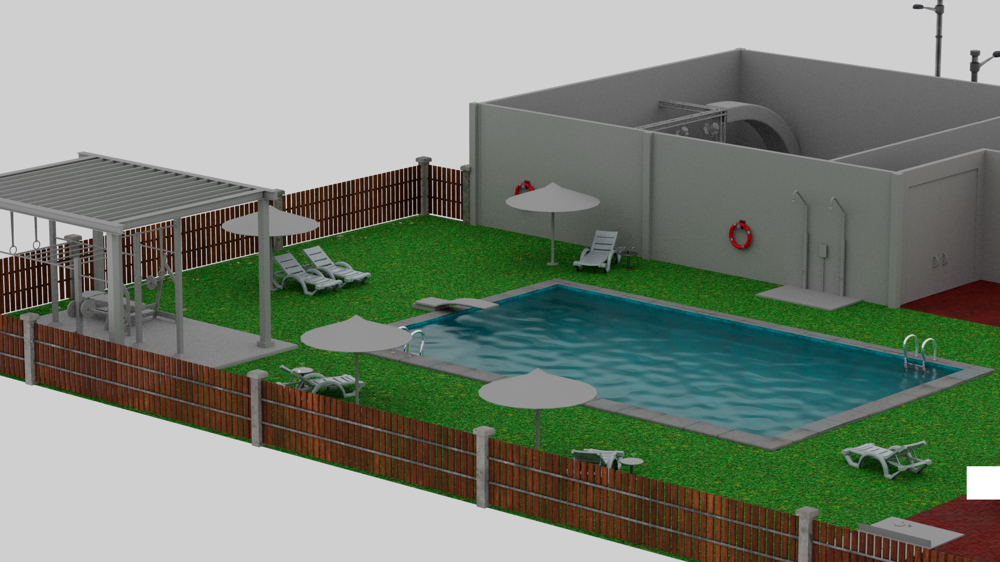
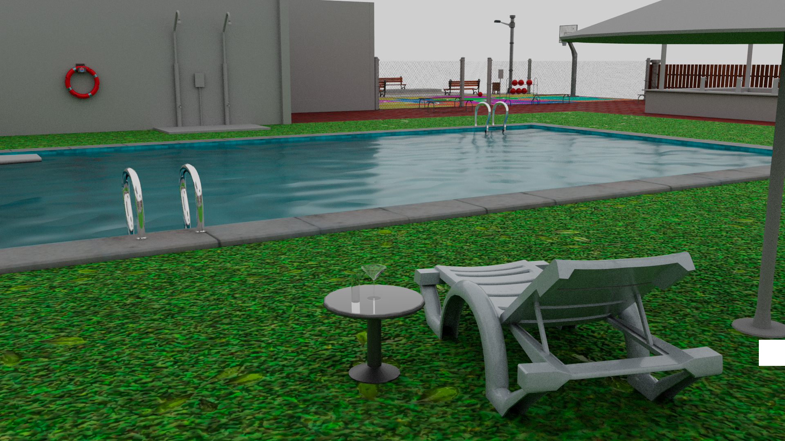
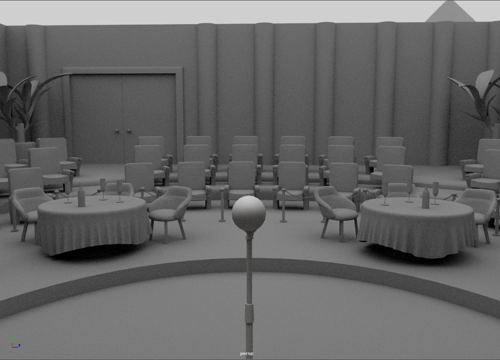
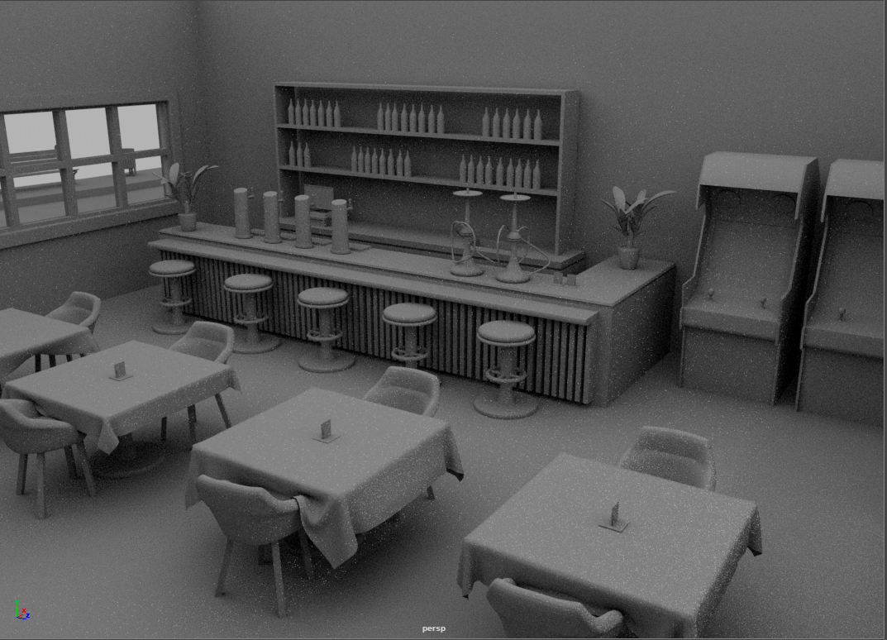
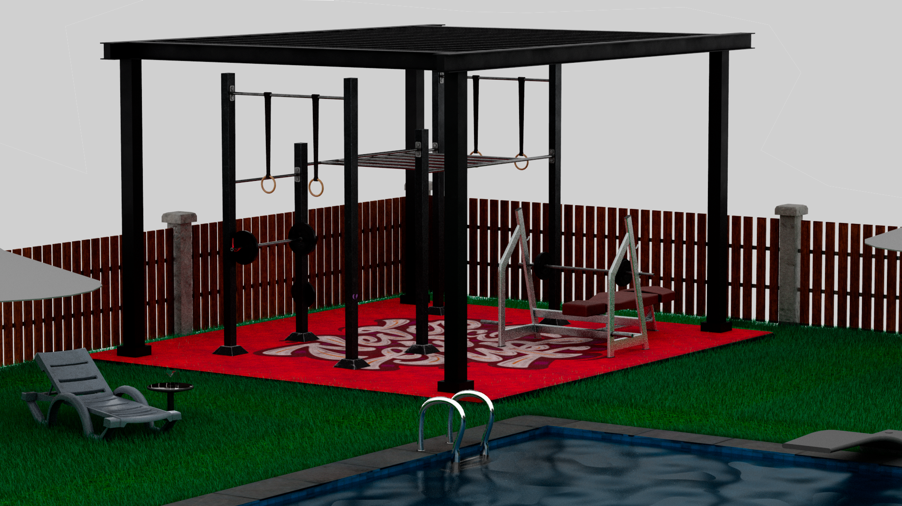
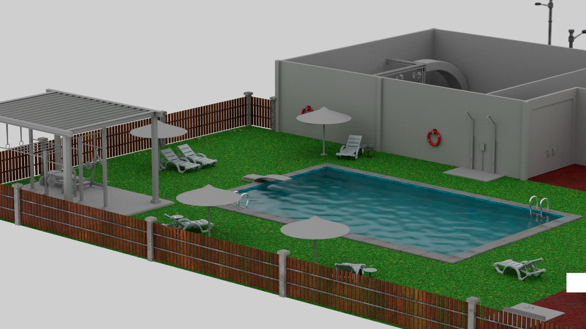
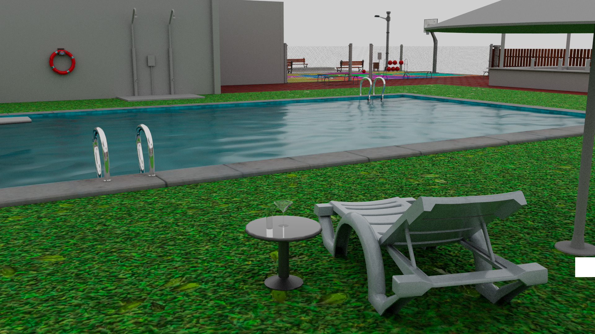
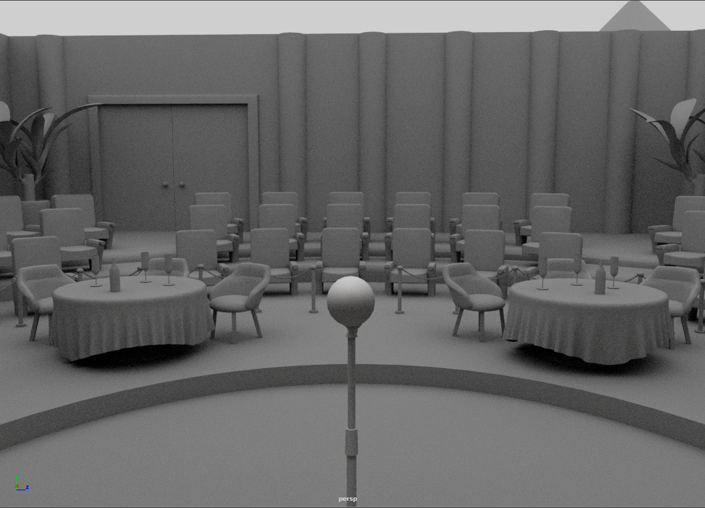
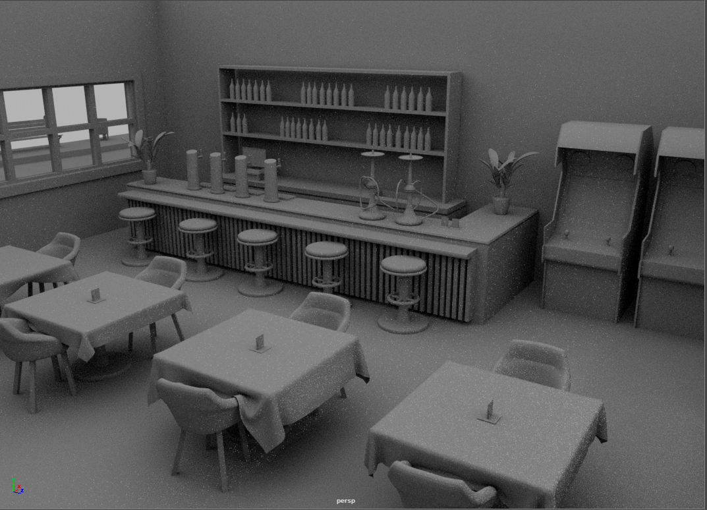

PROJECTES GENERALS
-KRiTOS BAR-
 









KRiTOS Bar és un projecte que porto desenvolupant des de novembre del 2021 com a un petit projecte d'una barra de bar, però que després em vaig replantejar engrandir i expandir fins a on és avui dia, un lloc on hi ha un bar, un amfiteatre amb escenari per a petits concerts, una piscina equipada amb hamaques i taules per l'estiu, un camp de bàsquet vallat, taules de ping-pong i un gimnàs exterior. És el projecte que més temps li estic dedicant, ja que és un repte personal per a mi.
-CARRER DE PARÍS-

EDIFICIS DEL CARRER
Aquest carrer ambientat en un carrer de París està fet en base a una referència que vaig trobar. Està majoritàriament fet amb low-poly encara que alguns objectes són high-poly. Em vaig posar això com a repte per demostrar-me a mi la capacitat que tenia de fer diferent tipus de modelatge, aquest que és més ordenat i amb una harmonia, en canvi, del projecte KRiTOS Bar que va ser més lliure.